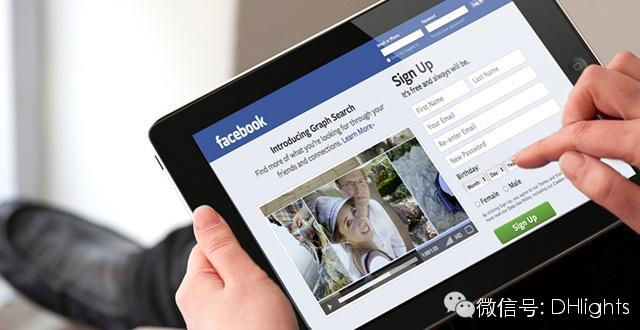
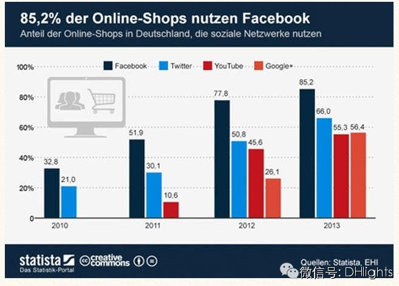

随着Facebook等社会化媒体的崛起，已有越来越多的网上商店使用这些社会化媒体平台来推广自己，来引入更大的流量从而将更多的产品卖出去。
电子商务企业结合社交网络，在中国有新浪微博与阿里巴巴的结合，淘宝网借助新浪微博引入流量并转化为线上订单。如今，德国的许多电商企业也在这么做，他们纷纷利用Facebook等社交网络，去为自己的网上商店引入更多的流量。
从德国《商报》10月14日的报道中获悉，近年来，德国的网上商店已经越来越重视社会化媒体的运用。根据Statista和EHI零售研究所最近的一项研究显示，在2010年时，德国几乎没有一家网上商店会在Facebook上设置个人主页，而目前已经这个比例已经高达85%。也就是说，目前德国已经有85%的网上商店使用Facebook做营销。
根据调查，德国还有2/3的网上商店使用Twitter做推广，另外YouTube和Google也是经常被他们用到的推广利器。
Statista以图形的方式来展现了以上四个社会化媒体最近几年在德国电子商务行业中的运用情况：

该图说明了四大社会化媒体在德国电子商务行业中的市场份额，以及活跃程度。
社会化电子商务专家认为，社会化媒体已经成为电子商务企业新的客户关系管理的基本要素。消费者购买习惯的变化，已经导致电子商务模式的转变：从技术上趋向于社会化电子商务，因为社会化平台可更好地了解消费者购买的行为。也就说，社会化媒体为电子商务企业提供了一个与顾客在数字世界的对话平台。目前，德国很多的在线商店都会有社交插件，这不仅可以获得消费者对产品的建议，还可以在社交网站上传播自己，同时增加店铺的流量。
社交媒体平台与电子商务相结合可谓是大势所趋。业内专家认为，这样的结合可以使二者之间的优劣势得以互补。电子商务自身就是一种盈利模式，应用广泛，行业渗透力强，但是需要流量的导入，而且用户的黏性不强，而通过熟人之间的口碑传播对电子商务经营具有重要影响。社交平台可以更直观的了解到用户的需求是什么，通过对电子商务的平台的便捷来笼络用户，更为关键的是，通过与电子商务的合作让聚集了海量用户的社交平台带来真金白银。二者互补的特性正是结合成功的基础所在。爆米花网CEO吴根良指出：“相对于传统B2C平台，社交媒体电商平台拥有更多、更稳固的消费人群，能靠分析用户属性与活跃度来提升电商转化率、到达率、成单率，从而让商家获得好的投资回报。”
艾瑞咨询的调研数据显示，有84.7%的用户将会继续使用社交平台与电子商务相结合的网购方式，其中有72.9%的用户会逐渐增加对此类网站功能的使用。由此可见，社交平台与电子商务相结合的购物方式逐渐得到用户的认可，拥有巨大的用户市场潜力。